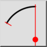
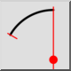
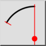
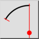

Središče, Točka, Koti
Toolbar / Icon:
 

Menu: Risanje > Lok > Središče, Točka, Koti
Shortcut: A, R
Commands: arcc | ar
Toolbar / Icon:
 

Menu: Risanje > Lok > Središče, Točka, Koti
Shortcut: A, R
Commands: arcc | ar
Izriše krožni lok z podanim središčem, točko na krožnici ter začetni - končni kot.